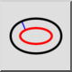

Parallell kurve (med avstand)
Verktøylinje/ikon:


Meny: Tegn > Ellipse > Parallell kurve (med avstand)
Snarvei: E, C
Kommandoer: ellipseoffset | ec
Verktøylinje/ikon:


Med dette verktøyet kan du opprette én eller flere parallelle kurver med en angitt avstand til en eksisterende ellipse.